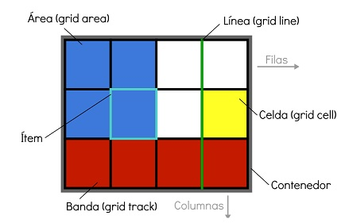

CSS Grid es un modelo de maquetación CSS en base a una rejilla, algo que podría no parecer tan novedoso, si tenemos en cuenta que diversas librerías de CSS lo habían intentado ya. Sistemas como 960 Grid System fueron pioneros en crear una base de código CSS para que los diseñadores pudieran posicionar los elementos en una distribución de filas y columnas. El propio Bootstrap incluye entre otras cosas un sistema de rejilla. Al final, estos sistemas funcionaron, pero tenían varios problemas
Rejilla, columnas y filas
Con CSS grid layout, se trabaja con filas y columnas para crear una cuadrícula, en la cual se colocan y distribuyen los distintos elementos. El usuario es quien decide el tamaño de las filas y las columnas, añadiendo las preferencias al contenedor. .grid-container { display: grid; grid-template-rows: 100px; 100px grid-template-columns: 100px; 100px; 100px; } Con estos dos comandos hemos abierto una cuadrícula de 2 por 3. Como puedes ver, el tamaño de cada fila y columna se puede definir por separado. Los datos se indican de forma sucesiva (separados por un punto y coma y un espacio). Además de la información exacta de los píxeles, también puedes usar porcentajes u otras unidades que son comunes en CSS. Las especificaciones max-content y min-content permiten crear una cuadrícula según el contenido. La opción grid-gap crea un espacio vacío. .grid-container { display: grid; grid-template-rows: 100px; 100px; grid-template-columns: 100px; 100px; 100px; grid-gap: 5px; }
(N.d.). Arsys.Es. Retrieved noviembre 1, 2021, de https://www.arsys.es/blog/programacion/ css-grid layout/#Que_hay_de_nuevo_en_CSS_Grid